Case study
Configurator
A tool that helps asset managers explore renovation scenarios, improve energy efficiency, and optimize investment costs.
Anna Iarinovskaia
Digital Product Designer
A tool that helps asset managers explore renovation scenarios, improve energy efficiency, and optimize investment costs.
The Energy Measures Configurator helps asset managers explore renovation scenarios, weigh trade-offs, and optimize investment costs - instead of reading a static report and closing the tab.
What started as an experimental feature hypothesis became the most-used part of the platform, and eventually a standalone product experience with its own place in the main navigation.
Asset managers could only download a static renovation report with predefined packages. It was informative once, but rigid - there was no way to explore a different mix of measures, test a "what if," or see how a decision actually moved the numbers.
The result: engagement ended the moment the PDF downloaded. Users were making renovation decisions off a document they couldn't interact with.
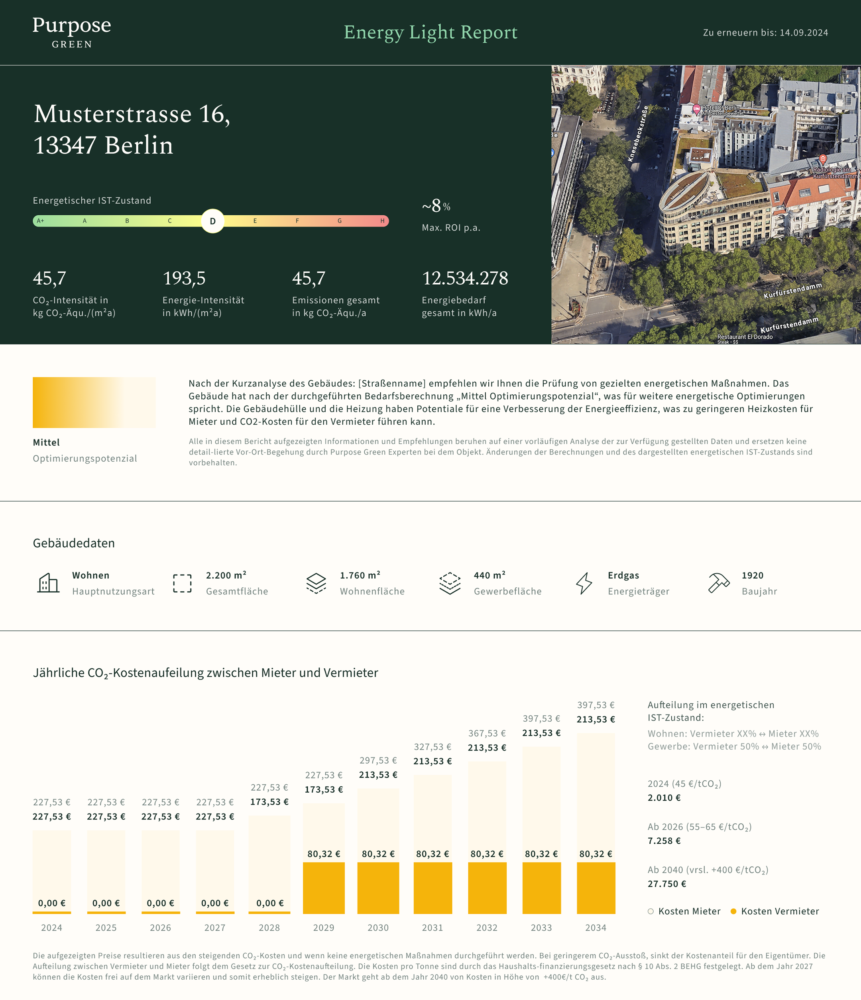
I ran internal workshops with the energy team to map the full scope, then validated a prototype in two usability tests.
„Das ist genau das, was ich gebraucht habe."
Session 1
„Alles super selbsterklärend."
Session 2
Testing surfaced several gaps to address in the next iteration:
An early exploration before anything was built. The 3D building model was already central to the vision - users could tap a measure to select it - but interface and data feedback were minimal. This concept set the direction for everything that followed.
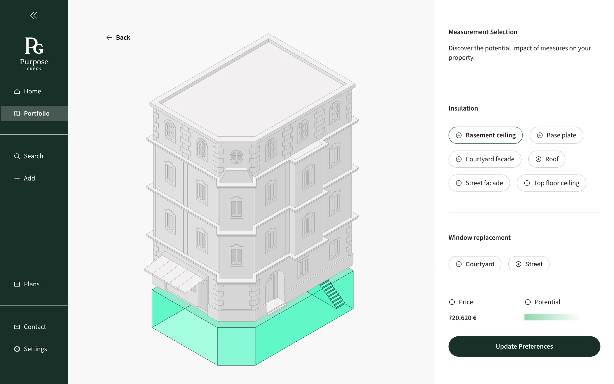
Users could select renovation measures and see the impact on a 3D model or in a cost/energy table. This made the trade-offs tangible for the first time - but the configurator still lived inside the property detail page, one feature among many.
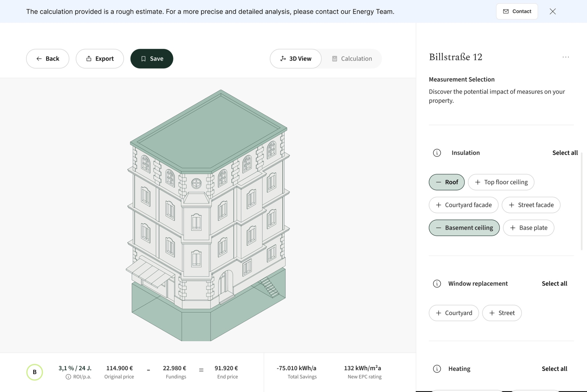
The configurator became a core feature in the portal, with a dedicated place in the navbar and views for 3D, costs, ROI, energy data, and decarbonization. A fixed panel keeps selected measures visible, while transparent cost breakdowns address the pricing gap identified in research.

About 80% of users with access to the Configurator engaged with it regularly on a monthly basis, tracked through Pendo. This directly addressed the engagement problem of the previous report experience.
The Configurator became the feature most frequently requested by customers, based on recurring feedback from sales, and directly contributed to 10 new paid conversions.
The project changed how we thought about the product - from delivering static reports to building interactive tools that let users explore scenarios and plan independently.
The hardest part of this project wasn't visualising complex data. It was deciding when users needed the detail and when they needed the bigger picture.
Working on the configurator taught me to treat information hierarchy as a product decision, not just a UI decision.
The final experience balanced exploration with analysis - giving users enough freedom to ask "what if?" while making the consequences of each decision understandable.
The platform originally focused on individual properties. But asset managers operate at a portfolio level - their goal is to maximize ROI and cash flow across multiple assets simultaneously.
Without a portfolio view, users had no way to assess overall performance or know where to act first. Every decision required individually analyzing each property, increasing cognitive load and slowing down the workflow significantly.
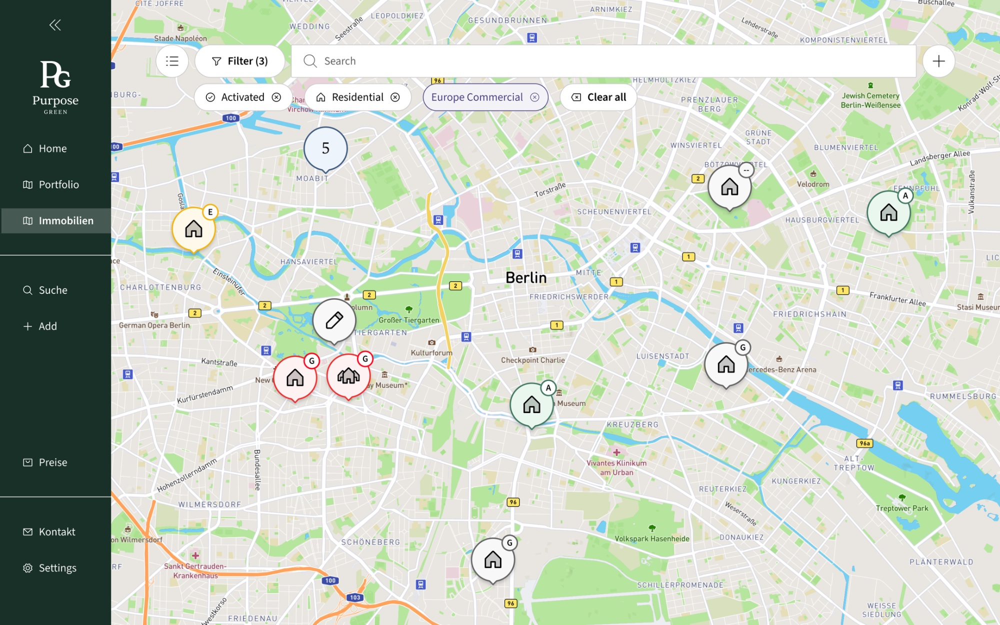
A portfolio view only creates value if it tells users what to do next - not just where things stand.
Early concepts explored multiple tabs across finance, energy, and construction - a natural starting point for a platform managing multi-dimensional assets. But presenting all dimensions at once added cognitive weight and relied on incomplete data sources.
We narrowed scope to the two areas that mattered most and were best supported by available data: Current State (portfolio health) and Strategy (actionable roadmap).
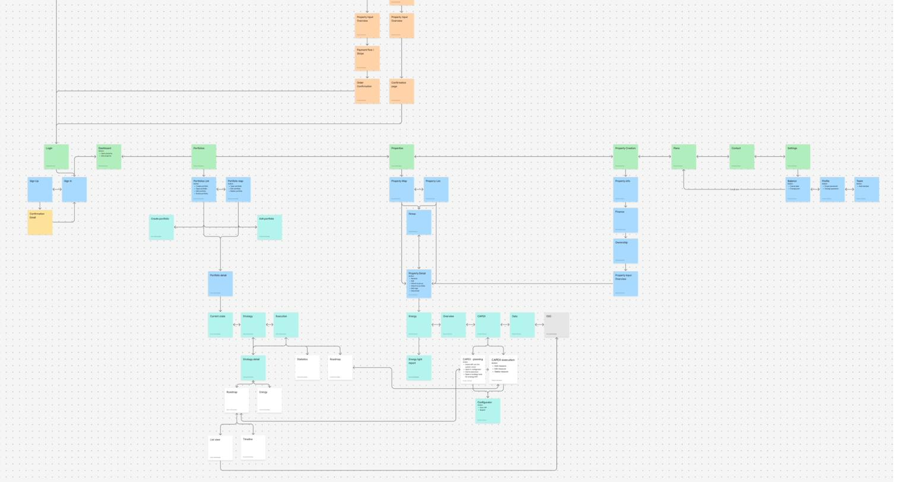
The portfolio and strategy features were validated through 8 user testing sessions with asset managers.
The roadmap and strategy view consistently emerged as the most valued feature - appreciated for giving a clear starting point rather than presenting all data at once.
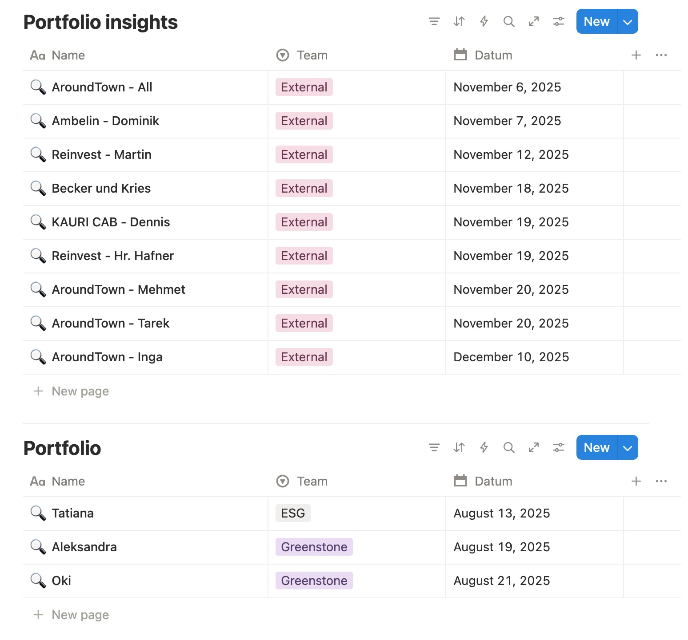
Current State at a Glance
High-level KPIs and summary indicators give immediate insight into overall portfolio performance. Users can assess health without drilling into individual properties.
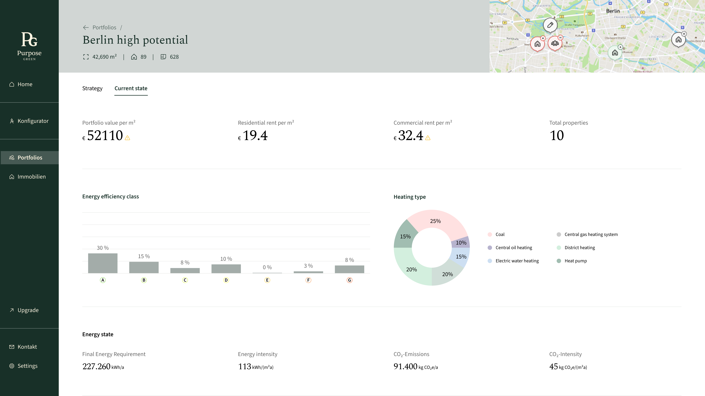
Three Scenarios, Clear Trade-offs
Three strategies were offered for the portfolio: Stranded Asset Schutz (low cost), Smart Retrofit (cost-to-impact), and Beste Klasse (maximum improvement), giving users different approaches based on their priorities.
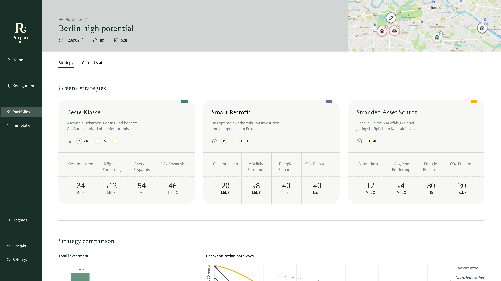
Prioritized Order of Action
Properties are ranked by improvement potential, giving users a clear sequence for where to act first. This reduces manual analysis and turns portfolio data into an actionable starting point.
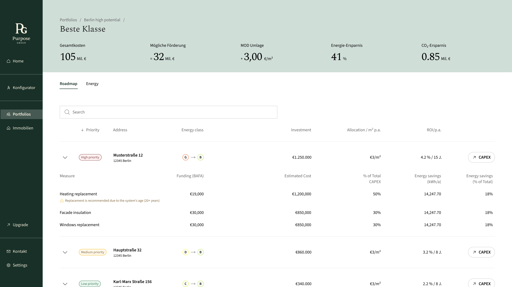
Adjust Measures, See the Impact
The roadmap connects to the configurator so users can fine-tune renovation measures for individual properties and see how those changes affect the wider portfolio.
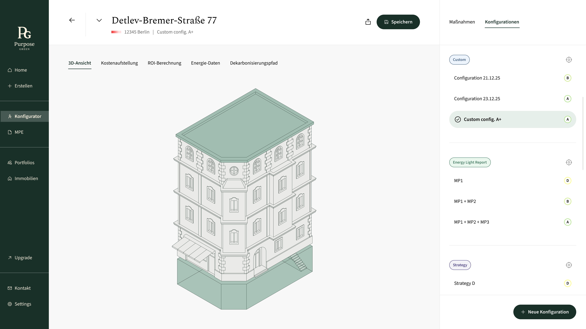
Good portfolio design isn't about showing more data. It's about helping users understand what matters.
This project taught me that portfolio-level design adds the most value through guidance and prioritization - helping users understand where to start, what deserves attention, and what action to take next.
Narrowing the experience to Current State and Strategy, rather than building every dimension at once, allowed me to prototype and validate quickly within real data constraints. Future iterations would extend the experience to commercial properties, refine scenario customization, and deepen the connection between strategy selection and Configurator output.
The platform helps users manage and analyze property energy data. Previously, onboarding happened entirely outside the product — a sales team walked each user through setup before handing over access.
With the shift to a freemium model, users could now sign up and begin independently. But the product wasn't ready to receive them — new users arrived at an empty dashboard, with no indication of how to get started or unlock value.
Users landed in an empty dashboard with no content and no clear starting point.
There was no guided next step — the UI offered features but no direction.
Core product value required a property to be created first — a prerequisite users didn't know about.
High risk of early drop-off before users ever reached a meaningful moment in the product.
Onboarding shouldn't explain the product — it should drive users to create their first property.
Replaced passive onboarding tours and tooltips with a goal-oriented property creation flow. Instead of explaining what the product does, users immediately do the thing that reveals it.

Users can save as a draft, skip a step, or come back later. Nothing in the flow is a hard gate on reaching the dashboard.
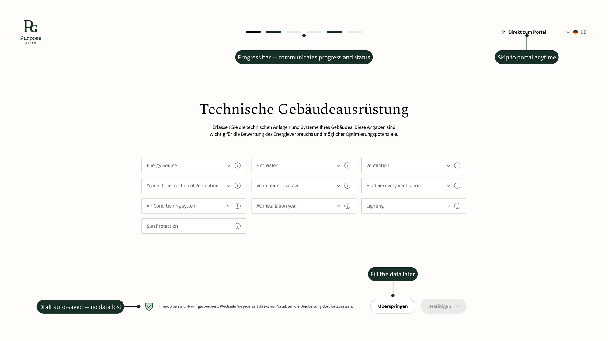
The dashboard homepage itself continues the onboarding, guiding the user toward their next action instead of handing off to an empty screen once setup ends.
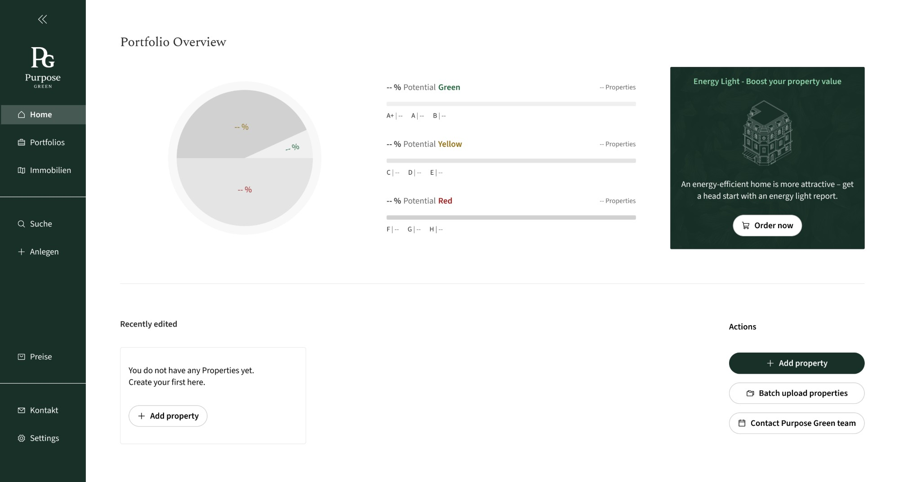
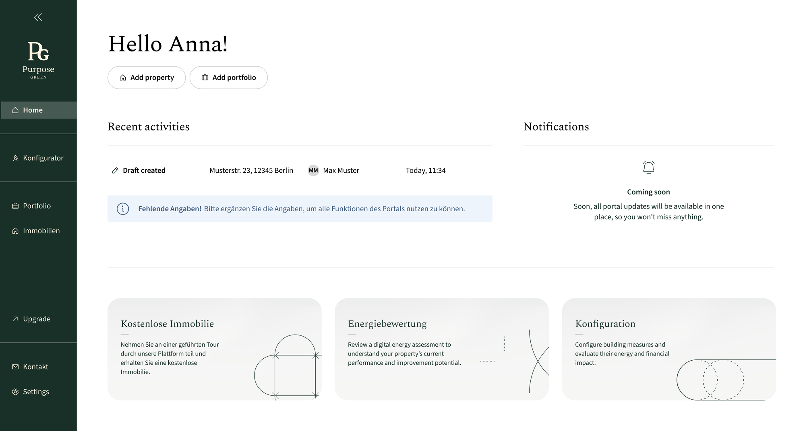
Users move directly from signup to creating their first property — the action that unlocks the product's core value.
Users can save their progress, continue later, or skip ahead, making onboarding work with different levels of readiness and available data.
The new flow reduced reliance on manual setup and created a scalable foundation for the platform's move toward self-serve adoption.
Good onboarding isn't about explaining everything. It's about getting users to their first meaningful action.
This project taught me that onboarding is part of the product experience, not a layer added on top of it. By focusing the flow around creating a first property, the experience could guide users toward value without overwhelming them with information upfront.
Designing for incomplete data also changed how I thought about progress. Instead of treating missing information as a blocker, the flow gave users ways to move forward and return later — creating a more flexible experience that could support self-serve adoption as the product scaled.